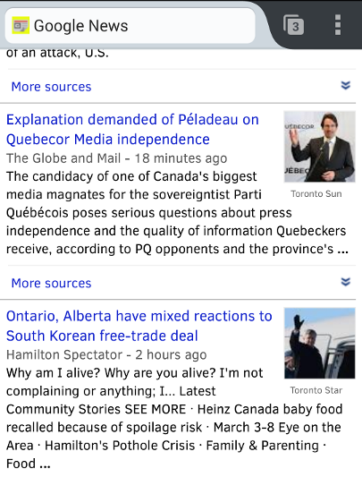

Structured data NOW
Seeding schema.org in library systems
alternate title:
Tales of a semantic web dropout!
Happy 25th, World Wide Web!
We should work toward a universal linked information system, in which generality and portability are more important than fancy graphics techniques and complex extra facilities. [...] There is also much support from the publishing industry, and from librarians whose job it is to organise information.
CERN. "Information Management: A Proposal". March 1989.
Bags of words are still hard
Bags of words are still hard

Bags of words are still hard
Libraries: early technology adopters
- Telnet access to catalogues
- Z39.50 protocol for sharing records
- OpenURL protocol for resolving article requests
- COinS microformat for embedding citations in HTML
- unAPI for offering different metadata representations
Consistent flaw: almost entirely library-specific technologies
MARC: (still) kind of a big deal
Our decentralized infrastructure has been centralized.
If your holdings are not in OCLC, you're not linked to Google Books.
Linked data library system leadership
- Some library systems have supplemented or discarded MARC for a linked data model:
- Swedish Union Catalog
- German National Library
- Bibliothèque nationale de France
But is your library...
- Large (national scale)
- Able to sustain multi-year development efforts with concurrent systems
- Able to mandate significant changes to established practices
In all honesty
- I wanted to make my library system part of the Semantic Web, but:
- RDF/XML, N3, Turtle
- conneg
- Vocabularies, ontologies
- open-world vs. closed-world assumptions
- Triple stores, SPARQL
- OWL
- Protegé
- Billions of triples
One day at Google I/O 2011...
Talk: Scalable structured markup (for Rich Snippets)
schema.org
- In July 2011, schema.org was announced by major search engines (Google, Yahoo, Yandex)
- Some goals:
- Offer a simple vocabulary for the short tail of web results (events, products, people)
- Enable normals to add schema.org markup (via RDFa Lite or microdata) without having to be Semantic Web experts
- Enable search engines to aggregate data and apply finer-grained disambiguation and relevance strategies
- A reaction to the state of the Semantic Web
schema.org: hierarchical types

schema.org: Creative Works

schema.org: Book
schema.org: focus on examples

RDF in Attributes (RDFa)
- 2004 proposal that started to take off with HTML5
- RDF serialization that decorates HTML with a dozen or so attributes
- RDFa Lite is pared down to just five attributes
<html>
<head><title>Fancy academic article</title></head>
<body vocab="http://schema.org/" typeof="ScholarlyArticle">
<h1 property="name">The web as intellectual rising tide</h1>
<div property="articleBody">
<p>As my esteemed colleague
<a href="http://example.com/author" typeof="Person"><span
property="name">Foo Bar</span></a> has
<a href="http://example.com/article" property="citation">astutely
observed</a> ...
</p>
</div>
</body>
</html>- microdata is a roughly equivalent form of inline markup
Baby steps
- By early 2012, Evergreen was publishing simplistic title/author/keyword schema.org via microdata
- Very shortly after, OCLC WorldCat started publishing rich, heavily extended schema.org via JSON
Better living through Web standards
Better living through Web standards
- Hypothesis: We can iterate towards linked data with existing systems
- Enhance our catalogues with web standards:
- Persistent URIs
- HTML5
- RDFa (or microdata) expressing schema.org
- Sitemaps listing all the URIs of interest
All of this has happened before...
- W3C Library Linked Data Incubator Group Report recommendations in October 2011 included:
- That library standards bodies increase library participation in Semantic Web standardization, develop library data standards that are compatible with Linked Data, and disseminate best-practice design patterns tailored to library Linked Data;
- That data and systems designers design enhanced user services based on Linked Data capabilities, create URIs for the items in library datasets, develop policies for managing RDF vocabularies and their URIs, and express library data by re-using or mapping to existing Linked Data vocabularies;
Authors included code4lib regulars such as Karen Coyle, Antoine Isaac, Peter Murray, Jodi Schneider, Ross Singer, Ed Summers, Jeff Young (apologies for anyone I've missed!)
Reality check: 2012 Common Crawl
- Ronallo(*) found that American academic libraries published under 10,000 schema.org instances in total
- Possible reasons for this low adoption rate include:
- Perceived return on investment is low in risk-averse, under-resourced institutions
- Proprietary systems do not facilitate shared modifications of HTML templates
- Sufficient access to underlying metadata may not be available in proprietary systems
Tackling the problem with Evergreen
- Simplistic microdata with the 2.2 and 2.3 releases:
- title/author/keyword properties
- Direct plain text values (no embedded types)
- 2.4 release broke entities out as
PersonandOrganizationtypes, separatedbirthDateanddeathDatevalues - 2.5 release (late 2013) switched to RDFa, exposed holdings as
Offertypes - 2.6 release (soon!) includes links from holdings to
Librarytypes
Further open source implementations
- Koha 3.14 and VuFind 2.1 accepted patches to express bibliographic data + holdings
- Independently, the Blacklight library system was enhanced to publish schema.org data
- Approximately 4,000 library systems will publish schema.org data as sites adopt the latest releases
We're all in this together: SchemaBibEx
The mission of this group is to discuss and prepare proposal(s) for extending Schema.org schemas for the improved representation of bibliographic information markup and sharing.
- Founded by Richard Wallis (OCLC) in September 2012
- Formally known as the W3C Schema Bib Extend community group
SchemaBibEx: Citations everywhere
- Originally only the
MedicalScholarlyArticletype had acitationproperty - Alf Eaton, via SchemaBibEx, proposed making the property applicable to all
CreativeWorktypes - Status: accepted
SchemaBibEx: Library items as schema.org Offers
- GoodRelations vocabulary for surfacing product information, based on an agent-object-promise model, was incorporated into schema.org
- Library-specific holdings vocabulary seemed
unlikely to gain traction from search engines (
express library data by re-using or mapping to existing Linked Data vocabularies
) - Libraries therefore offer items for "lease" at zero cost
- Status: SchemaBibEx recommended practice
Mapping holdings to schema.org Offers
| Offer property | Library item |
|---|---|
seller | Library |
sku | Call number |
serialNumber | Barcode |
availableAtOrFrom | Shelving location |
availability | Item status |
Holdings as Offers: example
<tr property="offers" typeof="Offer">
<td>
<a property="seller" typeof="Library"
href="http://example.org/library"><span
property="name">C.H. Booth Library - Newtown</span></a>
<link property="businessFunction"
href="http://purl.org/goodrelations/v1#LeaseOut">
<link property="itemOffered" href="#schemarecord">
</td>
<td><span property="sku">641.5 ROM c. 2</span></td>
<td property="serialNumber">34014012862984</td>
<td property="availableAtOrFrom">Adult Nonfiction</td>
<td><link property="availability"
href="http://schema.org/InStock">Available</td>
</tr>
SchemaBibEx: Periodicals
- schema.org had an
Articletype but no containing publication types - Drove a
Periodicalextension proposal that supported journal/magazine relationships:Article(and all child types such asScholarlyArticle):: isPartOf :: PublicationIssue:: isPartOf :: PublicationVolume:: isPartOf :: Periodical:: isPartOf :: Book
- Enables structured inline citations, regardless of citation format!
- Status: Under consideration by schema.org
SchemaBibEx: Comics

SchemaBibEx: overall status
- Exited active extension proposal development mode
- Documenting best practices and supporting adopters
- Will call ad-hoc meetings for new extension requirements
- Join our community and post questions to the mailing list!
Structured library information
One day at Google I/O 2012...
Ade Oshineye was singing the praises of Google+ Local pages
Some guy commented on Ade's G+ post about the presentation:
Still looking forward to a simple solution for automated Page updates for non-spammy metadata like hours of operation (yes, I was the guy who asked that question). Maybe we could teach G+ to scrape some selected microdata from an authoritative linked Web site, if pushing seems too dangerous?
Structured library information
- schema.org offers a
Libraryorganization type - ILS often tracks library hours, contact information, address, branch relationships
- Evergreen, as of 2.6 release, will expose this information by default
- You should not have to maintain business pages in umpteen different social networks!
Structured library information example
Structured library information example
<div vocab="http://schema.org/" typeof="Library">
<h1 property="name">Example Branch 1</h1>
<div><a href="http://example.com/BR1"
property="url">Library web site</a></div>
<h2>Opening hours</h2>
<div property="openingHoursSpecification"
typeof="OpeningHoursSpecification">
<link property="dayOfWeek"
href="http://purl.org/goodrelations/v1#Monday">
Monday: <span property="opens">12:00 AM</span> -
<span property="closes">12:00 AM</span>
</div>
<h2>Contact information</h2>
<div>Email: <a href="mailto:br1@example.com"
property="email">br1@example.com</a></div>
<div>Telephone: <a href="tel:(555) 555-0271"
property="telephone">(555) 555-0271</a></div>
<div property="location address" typeof="PostalAddress">
<h3 property="contactType">Mailing address</h3>
<span property="streetAddress">BR1<br>123 Main St.</span><br>
<span property="addressLocality">Anywhere</span><br>
<span property="addressRegion">GA</span><br>
<span property="addressCountry">US</span><br>
<span property="postalCode">30303</span><br>
</div>
<h2>Branch relationship</h2>
<div id="branch-info">Parent library:
<a property="branchOf"
href="/eg/opac/library/SYS1">Example System 1</a>
</div>
Thought experiment
- So we're exposing our holdings to the web...
- in a common format understood by search engines...
- linked to the library that holds the items...
- with that library's physical address, hours of operation, web site and contact info...
- ...
- when can we stop doing batch uploads to OCLC and/or other union catalogues?
Sitemaps
- Standard documented at http://sitemaps.org
- Simple XML lists of URLs that should be crawled, with optional change information:
<urlset xmlns="http://www.sitemaps.org/schemas/sitemap/0.9">
<url>
<loc>http://laurentian.concat.ca/eg/opac/record/100000?locg=105</loc>
<lastmod>2009-05-03</lastmod>
</url>
<url>
<loc>http://laurentian.concat.ca/eg/opac/record/100001?locg=105</loc>
<lastmod>2009-05-03</lastmod>
</url>
...
</urlset>
Quick union catalogues
- Many libraries have resource-sharing agreements, but infrastructure requires crufty Z39.50 lookups or periodic MARC batch loads
- Promise: Common vocabulary and mapping practices should ease cross-system integration
- Use case: Google Custom Search Engine (CSE) supports facets based on structured data such as schema.org
- Result: It works!
- Combined Evergreen + VuFind instances in a single search instance
- Faceted by schema.org
authorvalue - Exposes Google's simplistic string-based implementation of structured data

Quick union catalogues: in progress
- Schema UnionCat: < 100 lines of Python to crawl sitemaps and extract complex RDF
- Currently a proof of concept
- Future enhancements (if there is interest):
- Only crawl new and updated sitemap entries
- Store and search extracted RDF
- Check item availability on demand
Summary
- Web standards (sitemaps, RDFa, schema.org) > library-niche solutions and offer a path back to decentralization
- Catalogues can feed metadata directly to general search engines
- Open source implementations strengthen proposals; hopefully hasten proprietary implementations
- We have much more to do:
- Update Common Crawl analyses: broaden domains for 2012, update for 2014
- Enhance proof-of-concept RDFa crawler / extractor / union catalogue
- UNIMARC and NORMARC mappings for Koha
- Evolve MARC towards directly linked data
- SchemaBibEx now in
community support mode
; if you have implementation questions, ask us!
Resources
- RDFa Lite 1.1 W3C recommendation
- schema.org - official web site
- schema.org hands-on code lab - teaches you step by step how to add schema.org to a web page using RDFa
- W3C Schema Bib Extend Community Group - best practices for schema.org bibliographic use cases, extension proposals in progress, mailing list for assistance
- goo.gl/SO3WwZ - these slides